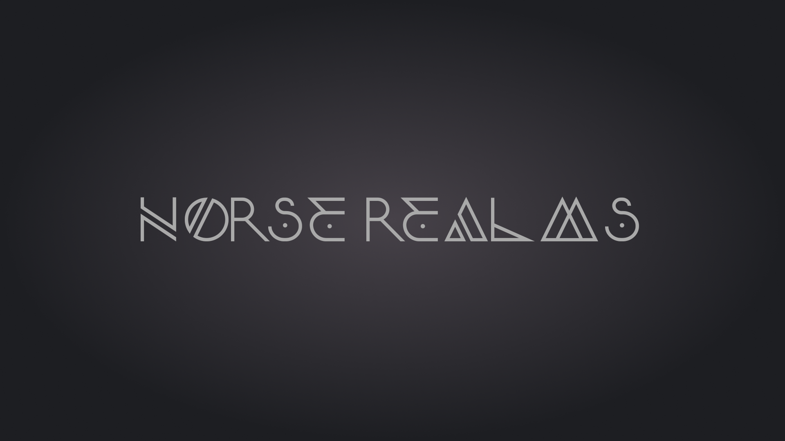

Norse Realms
In the 48-hour game jam creation Norse Realms, adhering to the theme "Every action does multiple things," I introduced a dualistic gameplay experience through two distinct characters:
- Axeman
- Shoots slow but powerful projectiles with a unique weapon passive—creating a circle of spinning axes.
- Character passive involves building up a shield.
- Left Shift triggers a low-range dash and leaves a spot for the Axeman to teleport back to.
- Archer
- Shoots fast projectiles with a weapon passive that unleashes a potent arrow penetrating through enemies.
- Character passive grants increased movement speed.
- Left Shift executes a long-range dash, conjuring a temporary black hole to pull in enemies.